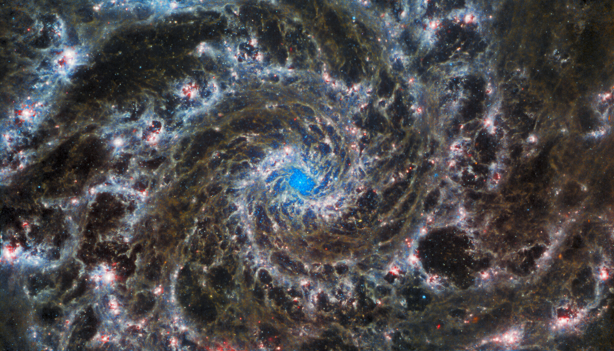
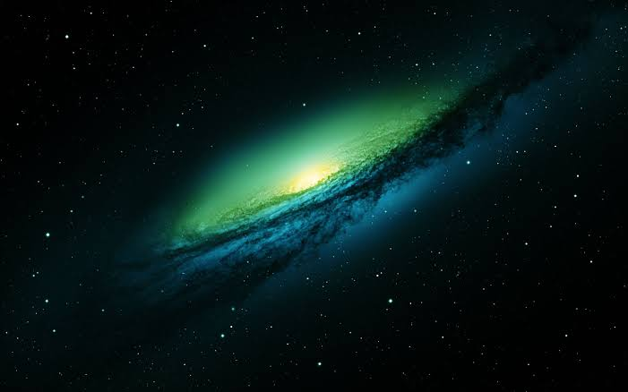
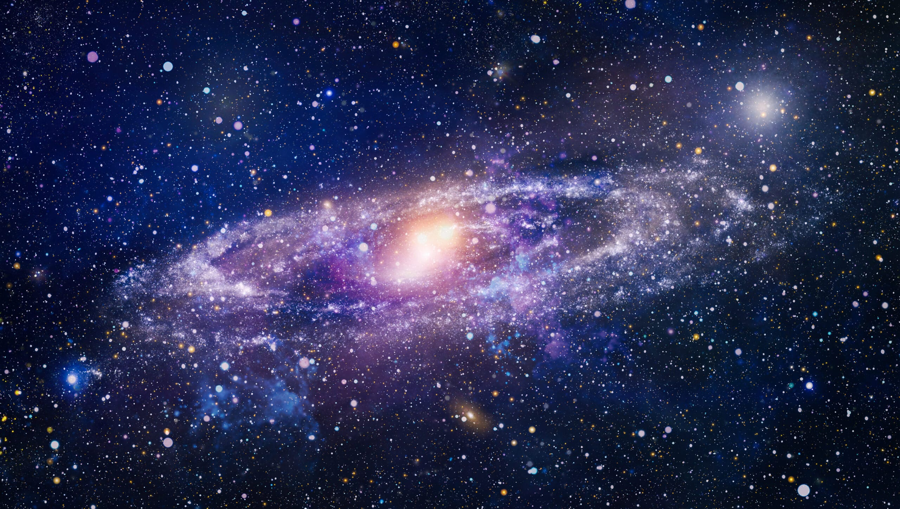
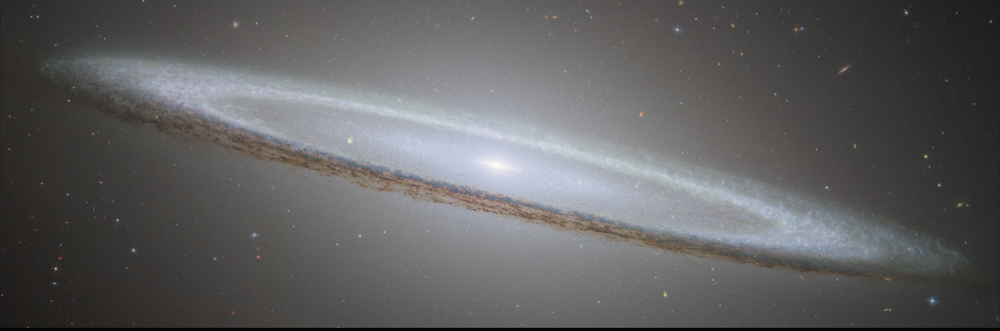
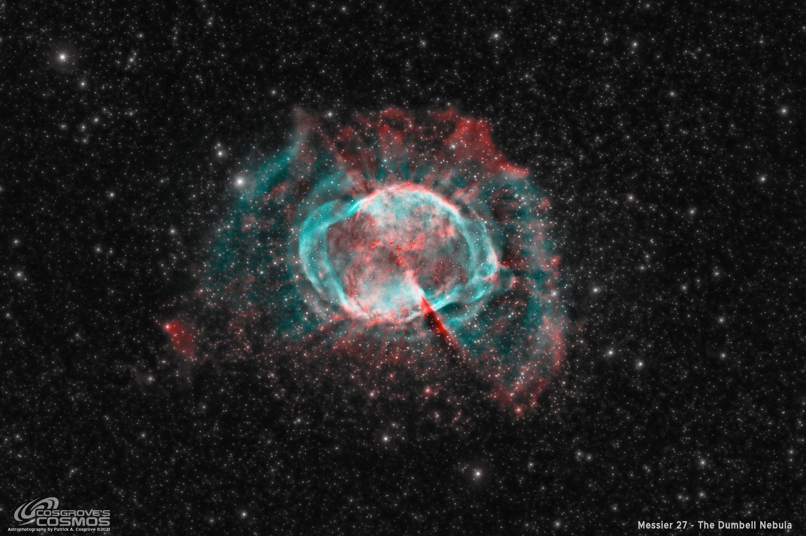
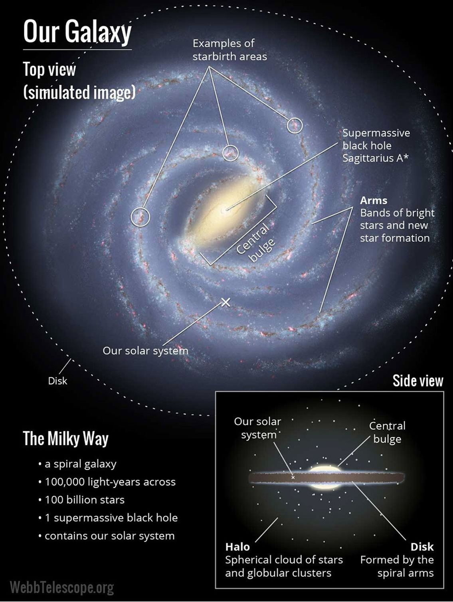
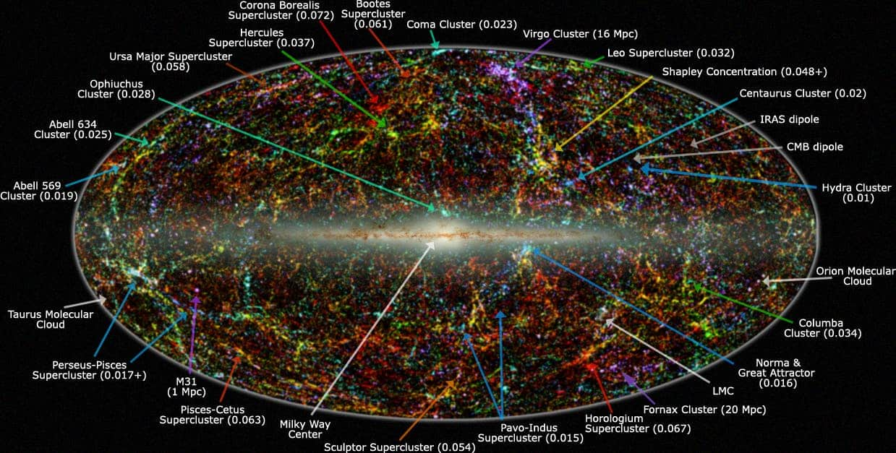

GALAXIES

A galaxy is a vast gravitational system composed of billions to trillions of stars, along with gas, dust, and dark matter, all bound together by gravity and evolving over billions of years. These enormous cosmic structures vary widely in size, shape, and activity—from elegant spiral formations like the Milky Way to smooth elliptical systems and irregular, chaotic clusters. Galaxies are the fundamental building blocks of the universe, often forming groups, clusters, and even larger superclusters that create a vast cosmic web stretching across space. At their centers, many galaxies harbor supermassive black holes, influencing their structure and evolution. Our own solar system resides within the Milky Way galaxy, just one of potentially hundreds of billions of galaxies that populate the observable universe, highlighting the immense scale and complexity of the cosmos.

At the simplest level, a galaxy is a huge collection of matter held together by gravity. It contains stars (from newborn clusters to ancient populations), interstellar gas and dust (the raw material for new stars), and a much larger invisible component called dark matter. Dark matter does not emit light, but its gravity shapes how galaxies form and how they rotate. Galaxies range from small dwarf galaxies with only a few million stars to giant ellipticals with trillions of stars.
Main galaxy types
Galaxies are commonly grouped by shape and structure.
- Spiral galaxies
- Elliptical galaxies
- Irregular galaxies
- Dwarf galaxies
- Lenticular galaxies
- Blazars
- Quasars
- Active galaxies - Around 10% of known galaxies are active, which means their centers appear more than 100 times brighter than the combined light of their stars. They can be spiral, elliptical, or irregular.
- Seyfert galaxies - Are the most common active galaxies and also exhibit the lowest energies. All Seyferts look like normal galaxies in visible light, but they emit considerable infrared radiation.
These categories are a helpful starting point, but real galaxies can be messy. Many show bars, rings, warps, or tidal tails, and their appearance can change over cosmic time through interactions and mergers.





Galaxy evolution
Galaxies are not static objects. Over billions of years they grow, transform, and sometimes shut down their star formation. In modern cosmology (often called the “hierarchical” picture), small structures form first and then build up into larger ones through continuous gas accretion and repeated mergers.
Timeline (approx.): the first stars formed within the first few hundred million years after the Big Bang, and the first small galaxies are thought to appear within the first billion years (some evidence points to galaxies already present a few hundred million years after the Big Bang). Over the next billions of years, galaxies assembled into larger systems, and the cosmic star-formation rate peaked roughly ~10 billion years ago before declining to the quieter universe we see today.
Feedback from supernovae and from supermassive black holes (active galactic nuclei) can heat or expel gas, regulating how quickly a galaxy makes new stars. This helps explain why many massive galaxies become “quenched” (forming few new stars) at late times.
Collisions, interactions, and mergers
Galaxy collisions are common because galaxies live in groups and clusters. Most of the time, stars do not directly crash into each other (space between stars is enormous), but gravity strongly reshapes the galaxies. Tidal forces can pull out long tails, trigger starbursts, feed central black holes, and disturb disks.
- Interaction: a close pass can distort shapes and ignite new star formation.
- Minor merger: a large galaxy absorbs a smaller one, gradually building its stellar halo and thickening the disk.
- Major merger: two similar-mass galaxies merge; disks can be destroyed and the remnant often becomes more elliptical.
- Milky Way × Andromeda: the two galaxies are expected to have their first close encounter in roughly ~4–5 billion years, with a longer merger process continuing for several billion years after.
Because mergers were more frequent in the early universe, many galaxies we see today carry “fossil” evidence of past collisions in their stellar streams, bulge structure, and the motions of their stars and gas.


Milky Way
The Milky Way is a barred spiral galaxy that contains our Solar System. It has a rotating disk with spiral arms, a central bulge/bar, and an extended halo dominated by dark matter. From our position inside the disk, we see it as a bright band across the night sky.
- Size: about ~100,000 light-years across (order of magnitude).
- Stars: roughly hundreds of billions of stars.
- Central black hole: Sagittarius A*, about ~4 million solar masses.
- Sun’s location: about ~26,000 light-years from the galactic center.
- Time: the oldest stars are > 13 billion years old; the Sun formed about 4.6 billion years ago.
The Milky Way has grown through a long history of accretion and minor mergers. Streams of stars around the galaxy are evidence of smaller galaxies being torn apart and absorbed over time.

Andromeda (M31)
Andromeda (Messier 31) is the nearest large spiral galaxy to the Milky Way and the biggest member of the Local Group. It is visible to the naked eye from dark skies and has long been a key target for understanding how spiral galaxies form and evolve.
- Distance: about ~2.5 million light-years away.
- Size: larger than the Milky Way (roughly ~200,000+ light-years across, order of magnitude).
- Motion: it is approaching the Milky Way at about ~100 km/s (radial component).
- Future: likely close encounter/merger with the Milky Way in ~4–5 billion years (approx.).
Like the Milky Way, Andromeda shows evidence of past mergers and interactions. Studying its stars, gas, and satellite galaxies helps reconstruct the assembly history of our local cosmic neighborhood.
The Observable Universe and its cosmic web

Galaxies are not spread evenly. On the largest scales, gravity arranges them into a cosmic web: filaments, walls, and clusters separated by enormous voids. Groups and clusters of galaxies are held together by a shared dark matter halo, and galaxies within them interact over billions of years.
The cosmic web is the largest known structure in the universe, a vast network of interconnected filaments composed of galaxies, galaxy clusters, and dark matter, stretching across billions of light-years. Rather than being distributed randomly, galaxies are arranged along these immense threads, forming dense nodes where clusters and superclusters meet, while enormous voids—regions with very few galaxies—exist in between. This web-like pattern emerged from tiny fluctuations in the early universe, gradually shaped by gravity over billions of years. Dark matter plays a crucial role in this structure, acting as an invisible framework that guides the formation and distribution of galaxies. The cosmic web reveals that the universe has a complex, large-scale architecture, where galaxies are not isolated systems but part of an intricate and evolving cosmic network.
